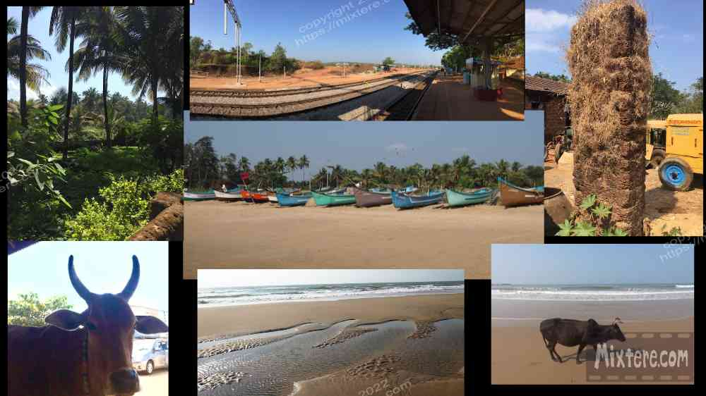
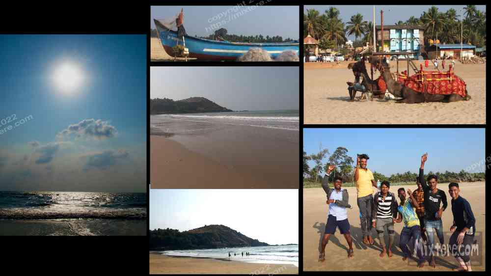

This will be a brief entry. Needing to move on from Kovalam, I picked out the town of Gokarna, below Goa, thinking it would be a little farther off the tourist path. The train from Trivandrum dropped me about 16 kilometers from Gokarna at about three in the morning. I think I got off one station too early. Half-asleep and disoriented, I lay down on a bench at the train station and leaned against my packs for a little rest. I was careful not to actually fall asleep for security reasons. Attempting to go into town at that hour would not have been safe or smart. And regardless, I did not have any accommodation reserved and it would not have been proper or even possible to approach a hotel at that hour. Additionally, evening and early morning is when village dogs are on guard. It's best not to be wandering the streets at that hour, although I have done it. On the bench at the station I tried to find a middle ground between resting and still appearing somewhat alert. I probably failed at this but no one at the station gave me any trouble.
When the sun came up I walked to a bus that brought me into town. Looking out the window of the bus I noticed that the landscape was different again. The dry, red earth of a darker and flatter tone than in Kerala predominated. Tree and plant life were not as prolific and had a greyed to an iron green sort of tone. Red dust blanketed the hillsides and coated the surfaces of the leaves, buildings and roads. When the bus pulled into the depot I decided to walk the rest of the way into town. Immediate first impressions were made. Instantly I felt that Gokarna did not have the sense of place or heart that Kovalam had. It seemed sort of trashed. Looking around I guessed it to be a destination for Hindu pilgrims and vacationers, as there is a temple in town. It also seemed to draw hipsters and the young, pierced and tattooed, partying backpacker set.
I walked through the town looking for a guesthouse. The people that I witnessed- shopkeepers and pedestrians, struck me as course, many of them downright rude. Gokarna was not appealing. The sense of friendly aloha of Kovalam was not present here. What was here was tourist shlock and lots of it- gimmicky looking retail and rental shops, mediocre guesthouse and restaurant upon restaurant. I felt frustrated with the effort it had taken to get here. But this was not a place for me. Alas, I was worn out from the train and needed a place to stay. I checked a few prices and then checked into a reasonably-priced hotel nearest the beach. I went to the hotel restaurant that night and the food was expensive and flavorless. I can only conclude that as many of the visiting westerners are Europeans that lean toward the bland palette, it was likely that the restaurant was serving just what they wanted. Bland, fatty, safe stuff to be accompanied by cold beer. I can just hear them saying, “Not too spicy please.”
The next day I explored the beach. To do this I dodged a few bulls on the road and crossed a dusty bridge that spanned a filthy poop creek. Then it was through more cows and onto an expansive beach. I’ll hand it to Gokarna, it featured the nicest beach I have ever seen in India. It was really wide and miles long. The sand went out in a long gradual slope toward the sea. One had to wade through yards and yards of shallow water to be able to swim. The sheer volume of the beach and the clean conditions were a welcome change to the filth and the limited amount of sand in Kovalam. I walked the beach there a good deal. I am an extremely enthusiastic beach walker but I never reached the end of this long span of almost pristine sand. It looked like another village was built around it about four kilometers north of where I was. I never got there to confirm this. Around me were Indian tourists or pilgrims frolicking about, a few of them renting a few rides on camelback there on the sand. Farther down were the young foreigners lingering around the party spots. These consisted of many shack-like establishments along the beach. These places and the proximity to Goa, beer and likely drugs, were probably what drew the dreadlocked Waspafarians about.
Aside from the beach, when I think of Gokarna I remember the smell of cow dung. It was everywhere. Poop dust was in the air like it often is in Bodh Gaya. Cows wandered around the town as well as the beach. I even saw a few bulls locking horns above the bridge. One of the more peaceful of these animals came to visit me while I sat in the shade in the parking lot overlooking the beach. Cow or bulll... he or she really wanted to say hi to me. I swear that it even posed with me for a few photos. I don’t really have anything else to offer about Gokarna. The area was sort of a gateway to Goa, a place up to this point in my journey I had avoided. I choose to hop back on a train and continue my coastal search in Gujarat instead.

Right-click below to open in new tab

Click below for next chapter